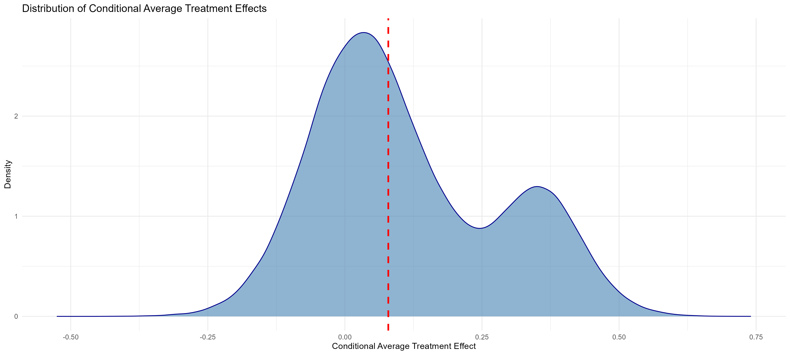
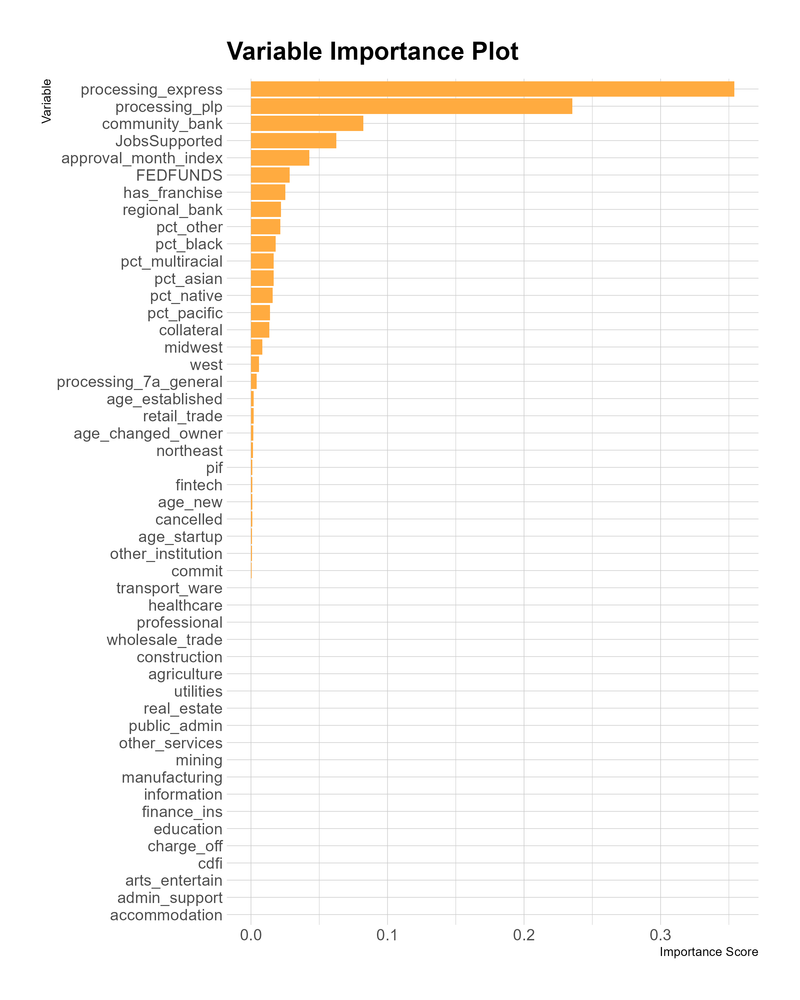
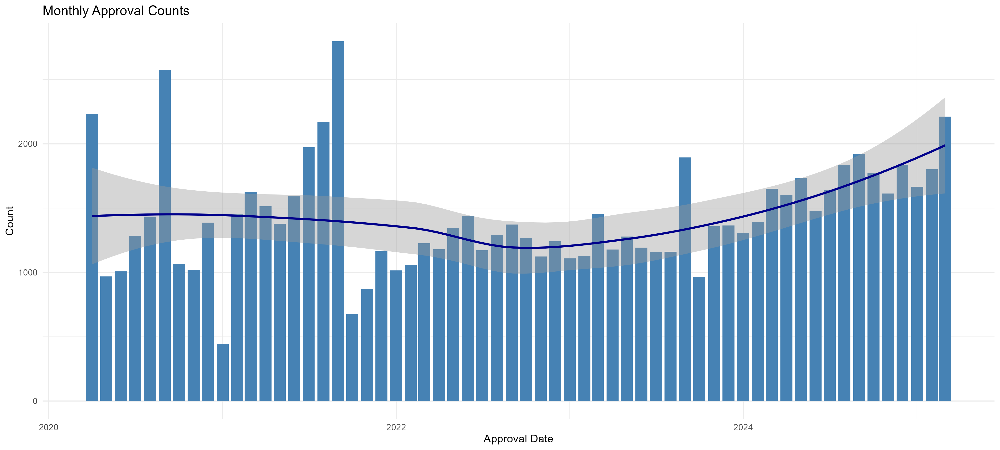

An Investigation of Small Business Administration Lending with Generalized Random Forest Models
Executive Summary
The Small Business Administration’s (SBA) flagship 7(a) loan program offers credit to tens of thousands of small businesses per year. The 7(a) program offers loan guarantees for small businesses that cannot access credit through other sources, which makes it particularly important for disadvantaged communities that often have lower credit scores and are more likely to lack personal collateral. Given the importance of the 7(a) program to underserved groups, this research examines whether there is any evidence that it reflects disparities that exist in the traditional credit market.
This research investigates the factors that affect 7(a) loan size using both linear regression and random forest models using loan-level data from the SBA’s 7(a) and Paycheck Protection Program (PPP) along with demographic American Community Survey (ACS). Loan size is an indicator of how well small businesses are able to access capital through the 7(a) program, and it can show us how the SBA distributes resources to different types of borrowers. The regression models find that Black recipients receive loans that are 42% lower than those who did not answer the race and ethnicity questions. In contrast, white recipients who answered the race question received loans that were 18% lower than the group that did not answer. A best linear projection of the random forest model does not find a statistically significant association between the racial demographics and loan amounts. However, both findings are limited by the poor quality of the publicly available data.
Background Summary
Small Business Administration lending plays a vital role in supporting entrepreneurship and fostering job creation, particularly among underserved groups and in disadvantaged communities. Research shows that increases in SBA lending are positively associated with state-level employment growth, especially when credit conditions are tight or in areas with limited access to traditional capital sources. SBA loans through the 7(a) and 504 programs, are most effective in the years immediately following disbursement, with estimates suggesting that each additional $1 million in SBA loans leads to roughly 3–3.5 jobs within three years.1 These effects are strongest for younger, smaller firms and during times when broader economic credit access is limited. SBA lending constitutes only a small portion of total small business financing despite these positive job creation effects. SBA lending activity can fill financing gaps left by private lenders and ensure that businesses have access to capital who cannot find it elsewhere.
SBA loans are particularly important for minority owned small businesses, who often face even greater barriers to accessing capital than other small businesses. Black-owned small businesses tend to have lower business credit scores, even when controlling for firm and human capital characteristics.2 These businesses are more likely to have their loan applications denied, and also tend to receive smaller loans with higher interest rates when they are approved.3 Despite these barriers, minority-owned businesses were still more likely to apply for financing through traditional sources than white-owned businesses.4 Extant research indicates that traditional markets are not adequately serving the needs of minority-owned small businesses and shows that the SBA can fill as minority-owned businesses attempt to expand and access credit. This research examines how factors such as race, ethnicity, sector, financial institution, loan processing method, and region affect SBA lending activity and investigates if disparities emerge in 7(a) lending.
Research Methodology
Data Sources
The Small Business Administration publishes 7(a) loan data quarterly to comply with FOIA requests, which contains primary data points of interest: loan approval amount and initial interest rate. However, the SBA does not publish loan-level demographic information about 7(a) recipients, and opts to only publish this information in the aggregate. This presents a challenge to evaluating loan outcomes at the loan level. In this project I use several strategies in an attempt to create proxies for this missing race and ethnicity information.
The first method involves matching 7(a) loans with Paycheck Protection Program loans, because the publicly available PPP data includes loan-level information on race and ethnicity. Additionally, the volume of PPP loans increases the chance of a match. The SBA made nearly 11.5 million PPP loans, covering over 90% of small businesses at the time.
I match 7(a) and PPP loans using multiple tests in an attempt to avoid spurious matches. Loans are first matched based on a cleaned version of the firm’s name that addresses changes in spacing, capitalization, and removes common business suffixes. Then matches that do not share a NAICS sector code are removed to address common business names across industries. Finally, businesses that do not share the same state or that are not part of a franchise have their matches removed. After this matching process, 86,082 loans out of the original sample of 312,194 7(a) loans can be matched with PPP loans.
I use this approach for my initial analysis of the effects of race and ethnicity on SBA lending outcomes below, but there are significant non-response bias issues with the PPP data. In the entire PPP sample, 75% of loan recipients left the race question unanswered in their application, and the 72% left the ethnicity question unanswered. These numbers improve on the observations joined with the 7(a) loans to 41% and 30% leaving race and ethnicity unanswered respectively. As a result of the high proportion of missing data, all regressions based on the PPP data will use the group that left the race question unanswered as the reference group. The rate of non-response bias from the PPP matching is slightly higher than the 22.7% that did not answer the race question reported from the SBA’s statistics published about 7(a) lending in aggregate. These aggregate numbers report that Black, Hispanic, Native American, and white loan recipients had loan volumes less than their share of the population of borrowers, while Asian borrowers and those that left the race and ethnicity questions unanswered received greater loan volumes. However, there are issues from non-response bias from the unanswered group.
In an attempt to address the non-response bias from the PPP data, I also use race and ethnicity data from the most recent American Community Survey (ACS) 5-Year Estimates. These variables differ from the loan-level data, and they reflect the demographics of the ZIP code that the business was located in when it received the 7(a) loan. This let me add race and ethnicity variables to all businesses in the sample rather than just ones that answered the questions on the PPP application. This also allowed me to expand the sample to include small businesses that were formed after the Paycheck Protection Program ended and subsequently received 7(a) loans.
However, relying on the ACS demographic data comes with its own set of limitations. First off, the demographic characteristics of a given ZIP code will not perfectly match the demographics of small business owners that operate in that ZIP code. The analysis using ACS demographic data relies on the assumption that there is an association between the demographic characteristics of small business owners in an area and the underlying demographics of the area as a whole.
Additionally, the ACS data may have imperfect matches with the ZIP code data from the SBA. The Census Bureau uses ZIP Code Tabulation Areas (ZCTAs) that are a geographical representation of ZIP codes. ZIP codes cannot be perfectly represented in this form, so there is a chance that a given observation is matched with the wrong ZIP code. This is likely to be relatively limited in practice, but it adds further error to our estimates using these data.
Linear Models
I create linear regression models to examine the association of variables such as race, ethnicity, loan processing method, and financial institution on 7(a) loan amount using either the PPP or ACS data. There is a general trend of loan size increasing over time, so both models use standard errors that are clustered by loan approval month.
Causal Forest Model
I also created a causal forest model using the ACS race and ethnicity demographic data. Additional covariates in the model included: business sector, financial institution types, loan processing methods, business franchising information, the federal funds rate, business age, number of jobs supported by the loan, loan servicing variables, and an indicator of whether the business also received a PPP loan. I use the binary indicator of whether or not businesses received a PPP loan as the treatment variable in the model.
To address that the treatment is not randomly assigned, I use the R-Learner Orthogonalization technique recommended by Athey and Wager.5 This involves creating two regression forests that will generate propensity scores and marginal outcomes respectively. I then find the residuals of the propensity scores and marginal outcomes and train the causal forest on these residuals. This method also allows me to train the causal forest on the entire sample of observations rather than splitting the model from training and testing.
After training the causal forest, I create a variable importance plot, to assess which variables contribute the most to the model’s predictions. I then select a subset of the most important variables to construct a best linear projection of the causal forest. This plots a doubly robust fit to a regression model of the association between the conditional average treatment effect of the model and the covariates selected from the variable importance plot.
Results
Linear Models
There are substantial differences in the estimates produced by the models using the PPP matching data or ACS data. The model that uses the PPP data finds that on average, Black loan recipients receive loans that are 41.54% smaller than applicants who left the race question unanswered. White 7a loan recipients only saw an 18.23% decrease in loan size associated with answering the PPP race question. On the other hand, the model using the ACS data does not find a statistically significant relationship between 7(a) loan amount and the percentage of Black residents in a ZIP code. These are not identical measures, but the distance between the estimates suggests the limitations stemming from the publicly available data sources. A full comparison table of these models can be found in the Appendix below.
Both models found statistically significant increases in funding associated with additional jobs supported by the 7(a) loan.
Both models estimate that an increase in the number of jobs supported by a 7(a) loan is associated with higher loan amounts. However, this field is self-reported by loan applicants and not verified by the SBA. As a result, it is likely that there is a positive association between planned increases in employment following 7(a) loans and the size of loans awarded, but the estimate may be biased away from the true nature of the relationship.
Both models also find that if a recipient uses a community or regional bank, they will receive a higher loan amount on average relative to a national bank. Both models find that regional banks are associated with larger increases than community banks, but they provide substantially different estimates of the magnitude of the effects. The model using PPP data finds that using a community bank is associated with a 7% increase in loan size, and using a regional bank is associated with a 35% increase in loan size. The model using ACS data finds that using a community bank is associated with a 38% increase in loan size, and using a regional bank is associated with an 84% increase in loan size on average. A full comparison of the model outputs can be found in the Appendix.
This difference in loan size between different financial institutions is likely due to institutional risk appetites and the costs of loan underwriting. Overall, national banks do less lending, and have smaller average loan sizes than community or regional banks. They also issue the greatest number of small 7(a) loans, $100,000 or less, and have the highest proportion of small loans of any type of financial institution in the sample. On the other hand, community banks conduct more 7(a) lending than national banks, while issuing less than half as many small loans than national banks. National banks issuing the highest proportion of small loans might indicate that they are able to underwrite loans more efficiently, allowing a greater number of small dollar loans to be profitable.
Causal Forest Model
The causal forest model finds a bimodal distribution of condiational average treatment effects (CATEs) associated with receiving a PPP loan. On average, firms that received a PPP loan received 7(a) loans that were 12.23% larger than firms that didn’t receive them. However, the treatment effects have a distribution that suggests one subgroup has a larger treatment effect, while the other group has a modest treatment effect. The density plot below shows the distribution of the CATEs over the entire model sample, with the dashed line indicating the median treatment effect.

I used a variable importance plot to find a ranking of which covariates have the greatest effect on the model’s estimation. The plot shows that two loan processing variables played the most important roles in the model estimates: the Preferred Lender Program and 7(a) Express. Both are programs that allow recipients to access capital more quickly than through the traditional 7(a) loan application. Filtering the results based on these two processing methods reveals that these processing methods are behind the overall bimodal distribution of CATEs.
The median CATE for the PLP group is .006, whereas the median CATE for the 7(a) Express group is .296. In reality, the difference in loan amount is not as large as the difference in CATEs, because PLP loans tend to be larger than those processed using the 7(a) Express method. The median value of a PLP loan is $370,000 and the median value of an Express loan is $100,000. Even with these differences, the CATE for the Express group is associated with a $33,400 amount, compared to a $2,200 increase for the PLP group.
Conclusion
This analysis finds mixed results in its examination of the association between racial and ethnic variables and SBA 7(a) loan outcomes. I cannot conclude that there is a relationship between race and SBA 7(a) loan amounts due to the substantial non-response bias in the PPP matching sample and the lack of a relationship found in the methods using ACS demographic data. However, the ACS data also have several key flaws that limit its use for this analysis.
The ACS variables represent the average demographics of an area rather than the demographics of business owners, let alone the subset of business owners that apply for 7(a) loans. The demographics of business owners in an area may not match with those of the population as a whole. This may be more of an issue with minority business owners, due to structural factors that limit the formation and growth of minority-owned businesses. Additionally, the ZIP codes measured on the 7(a) application do not perfectly match to the ZIP Code Tabulation Areas (ZCTAs) used by the Census Bureau for the ACS, which adds another source of error. Because of these issues, the ACS data may underestimate the associations between race, ethnicity, and loan amounts.
Additionally, the absence of disparities in loan size does not guarantee that issues are not present at other points in the loan process. Minority applicants may face greater challenges during the application process. Other research has found that race and gender affect the traditional entrepreneurial lending process, but the lack of public data makes it more challenging to assess if this behavior persists in SBA lending.6 They may also face different terms after receiving the loans, or face higher interest rates. These differences may also not even be present when the loans originated. For example, the PPP data suggests that Black 7(a) loan recipients are less likely to have a fixed rate loan than white recipients.
The state of publicly available data makes it difficult to assess causal relationships in SBA lending. Key demographic information is often missing or inconsistently reported, and the available data do not capture the full lending pipeline, from application to loan terms and outcomes. As a result, even well-designed statistical models struggle to produce definitive conclusions.
Future research using private administrative datasets, such as the Census Bureau’s Longitudinal Business Database, which can track firms over time and link business performance with owner demographics, might improve the quality of analysis. More granular and comprehensive data would allow researchers to better assess not only disparities in loan amounts, but also disparities in loan terms and long-run business outcomes. Without accessing such data, our understanding of equity in SBA lending remains incomplete.
Appendix
Best Linear Projection and Linear Model with Cluster Robust Standard Errors
| Variable | Best Linear Projection | Clustered Model |
|---|---|---|
| (Intercept) | 0.182* (0.082) | 12.590**** (0.030) |
| processing_express | 0.227*** (0.065) | -1.724**** (0.017) |
| processing_plp | -0.054 (0.052) | -0.133*** (0.037) |
| community_bank | -0.203*** (0.044) | 0.322**** (0.021) |
| JobsSupported | 0.000 (0.001) | 0.016**** (0.000) |
| approval_month_index | 0.004* (0.002) | |
| FEDFUNDS | -0.001 (0.017) | -0.059**** (0.007) |
| has_franchise | -0.243**** (0.038) | 0.237**** (0.025) |
| regional_bank | -0.250**** (0.061) | 0.611**** (0.017) |
| pct_other | -0.007** (0.002) | 0.008**** (0.000) |
| pct_black | 0.001 (0.001) | 0.000 (0.000) |
| pct_multiracial | -0.005 (0.005) | -0.001 (0.001) |
| pct_asian | 0.001 (0.002) | 0.004**** (0.000) |
| pct_native | 0.005 (0.008) | 0.004** (0.001) |
| pct_pacific | -0.020 (0.018) | -0.035**** (0.004) |
| Num.Obs. | 281691 | 281691 |
| R² | 0.453 | |
| R² Adj. | 0.453 | |
| RMSE | 1.11 |
Signif. codes: • p < 0.1, * p < 0.05, ** p < 0.01, *** p < 0.001
Standard Errors Shown in Parentheses
Paycheck Protection Program and American Community Survey Model Comparison
| Variable | PPP Data | ACS Data |
|---|---|---|
| (Intercept) | 13.187*** (0.047) | 12.590**** (0.030) |
| race_black | -0.537*** (0.031) | |
| hispanic | -0.095*** (0.022) | |
| race_asian | 0.226*** (0.025) | |
| race_native | -0.187*** (0.053) | |
| race_white | -0.201*** (0.018) | |
| race_pacific | -0.064 (0.108) | |
| not_hispanic | -0.003 (0.019) | |
| JobsSupported | 0.014**** (0.000) | 0.016**** (0.000) |
| processing_plp | -0.333**** (0.051) | -0.133**** (0.037) |
| processing_express | -1.701**** (0.030) | -1.724**** (0.017) |
| community_bank | 0.070** (0.026) | 0.322**** (0.021) |
| regional_bank | 0.300**** (0.024) | 0.611**** (0.017) |
| FEDFUNDS | -0.057**** (0.010) | -0.059**** (0.007) |
| pct_black | 0.000 (0.000) | |
| pct_asian | 0.004**** (0.000) | |
| pct_native | 0.004** (0.001) | |
| pct_multiracial | -0.001 (0.001) | |
| pct_other | 0.008**** (0.000) | |
| pct_pacific | -0.035**** (0.004) | |
| has_franchise | 0.237**** (0.025) | |
| Num.Obs. | 86082 | 281691 |
| R² | 0.395 | 0.453 |
| RMSE | 1.08 | 1.11 |
Signif. codes: • p < 0.1, * p < 0.05, ** p < 0.01, *** p < 0.001
Standard Errors Shown in Parentheses
Causal Forest Variable Importance Plot

SBA 7(a) Loan Approvals Over Time
Loan Count and Institution Type
| Institution Size | Total Loans | Loans < $100K | Proportion < $100K |
|---|---|---|---|
| National Bank | 104,289 | 59,524 | 57.1% |
| Fintech | 14,058 | 4,281 | 30.5% |
| CDFI | 1,239 | 309 | 24.9% |
| Other Non-Bank | 9,222 | 1,922 | 20.8% |
| Regional Bank | 54,612 | 10,774 | 19.7% |
| Community Bank | 128,774 | 24,078 | 18.7% |
Footnotes
Brown, J. David, and John S. Earle. “Finance and growth at the firm level: Evidence from SBA loans.” The Journal of Finance 72, no. 3 (2017): 1039-1080.↩︎
Henderson, Loren, Cedric Herring, Hayward Derrick Horton, and Melvin Thomas. “Credit where credit is due?: Race, gender, and discrimination in the credit scores of business startups.” The Review of Black Political Economy 42, no. 4 (2015).↩︎
Perry, Andre M., Manann Donoghoe, and Hannah Stephens. “Reaping the Unrealized Gains of Black Businesses.” (2025).↩︎
Wiersch, Ann Marie, and Lucas Misera. “2022 Report on Firms Owned by People of Color Based on the Small Business Credit Survey.” Small Business Credit Survey, July 29, 2022.↩︎
Athey, Susan, and Stefan Wager. “Estimating treatment effects with causal forests: An application.” Observational studies 5, no. 2 (2019): 37-51.↩︎
Bone, Sterling A., Glenn L. Christensen, Jerome D. Williams, Stella Adams, Anneliese Lederer, and Paul C. Lubin. “Shaping small business lending policy through matched-pair mystery shopping.” Journal of Public Policy & Marketing 38, no. 3 (2019): 391-399.↩︎